// Mobile App
Comect
Designing a student networking app that helps college students connect through shared classes, interests, and career goals.
Project Overview
As part of my quarter project for my INFO 360 Design Methods class, I designed an app where students can meet other likeminded students sharing the same major, taking the same classes, or joining the same clubs. The goal of this app is to allow students to make meaningful networks and build lasting connections.
Problem
It is often hard for students to form continuous connections with each other due to the limited chances of exposure (e.g., only talk during class time). Therefore, we are interested in learning about the burdens students might face when connecting with others and how interacting with others can provide them with mental, academic, and career support.
Solution
In order to address this issue, we decided to build an app that showcases a web map of possible connections based on shared experiences (e.g., class), interests, career aspirations, habits (e.g., movie, book, music preferences), and personalities.
Empathize
User Interviews
My team interviewed a total of 4 University of Washington students who were struggling to build long lasting connections with peers on campus.
Competitive Analysis
To understand the existing landscape, I looked at three platforms that address student connection in different ways: Goin', a student community app that partners with universities to connect degree seeking and mobility students; Unibuddy, a platform that connects prospective students with current student ambassadors at various universities; and Discord, a general purpose community platform widely used by students to form interest based servers and channels.
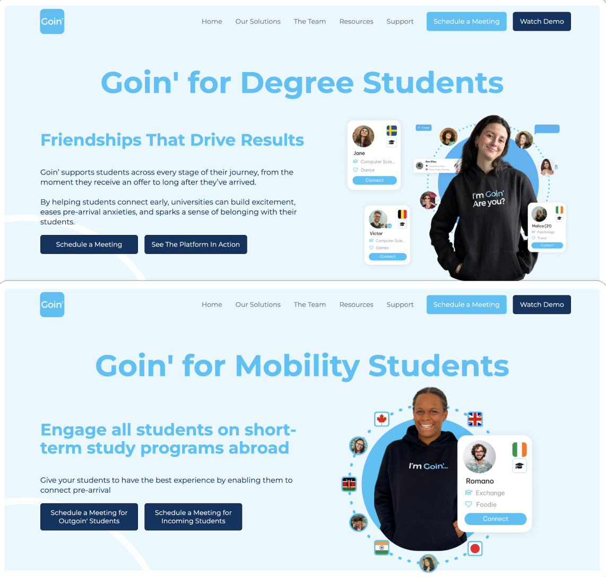
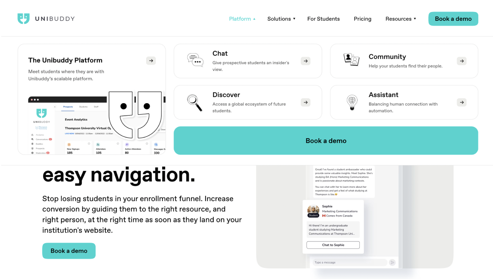
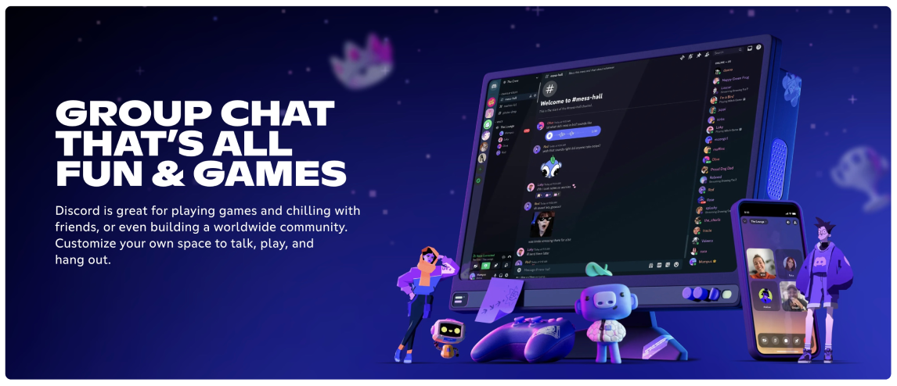
Challenges
- Goin's matches rely mainly on shared university or degree affiliation, making it harder to find someone with true academic overlap.
- Unibuddy focuses narrowly on helping prospective students learn about a university rather than helping current students build ongoing peer relationships, and its many features can feel cluttered.
- Discord lacks structure for forming connections around shared context, and its scale can feel intimidating and hard to keep up with.
Strengths
- Goin' offers a secure, verified school email system and high engagement through real time interaction tied to shared interests.
- Unibuddy's ambassador program gives students direct, guided access to people already established at a university.
- Discord's mix of public and private servers supports both broad interest based groups and closer, personal connections.
Define
User Persona
Lauren is a first-year international student from China navigating campus alone, without family familiar with the US system. Her goal is to build a social and academic network despite language and cultural barriers, connecting with students who share her classes or interests. Her biggest frustration is that shyness makes it hard to initiate conversations, and limited exposure outside class leaves few chances to meet people. She needs low-pressure ways to discover shared connections and ease into conversations naturally.
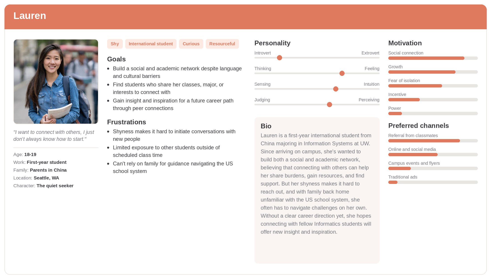
POV Statement
Lauren, a shy international student navigating a new school system largely on her own, needs an easier way to connect with students who share her classes or interests, because limited exposure outside class and the difficulty of initiating conversations make it hard to build the network she needs.
How Might We Questions
- How might we expand students' exposure to like-minded peers beyond the limited chances they get in class?
- How might we make it easier for shy students to build meaningful relationships without the pressure of cold introductions?
Ideate
User Flows
The user flow maps out four core paths from the nav bar: home page, network map, profile and settings, and direct messaging. Home page centralizes existing connections, network map routes users through filters (courses, career pathway, shared experience) to find new ones, and direct message enables chatting with context on shared interests. Mapping this clarified how discovery (filtering) should be separated from communication (messaging), and confirmed profile management needed its own dedicated space with multiple update methods.
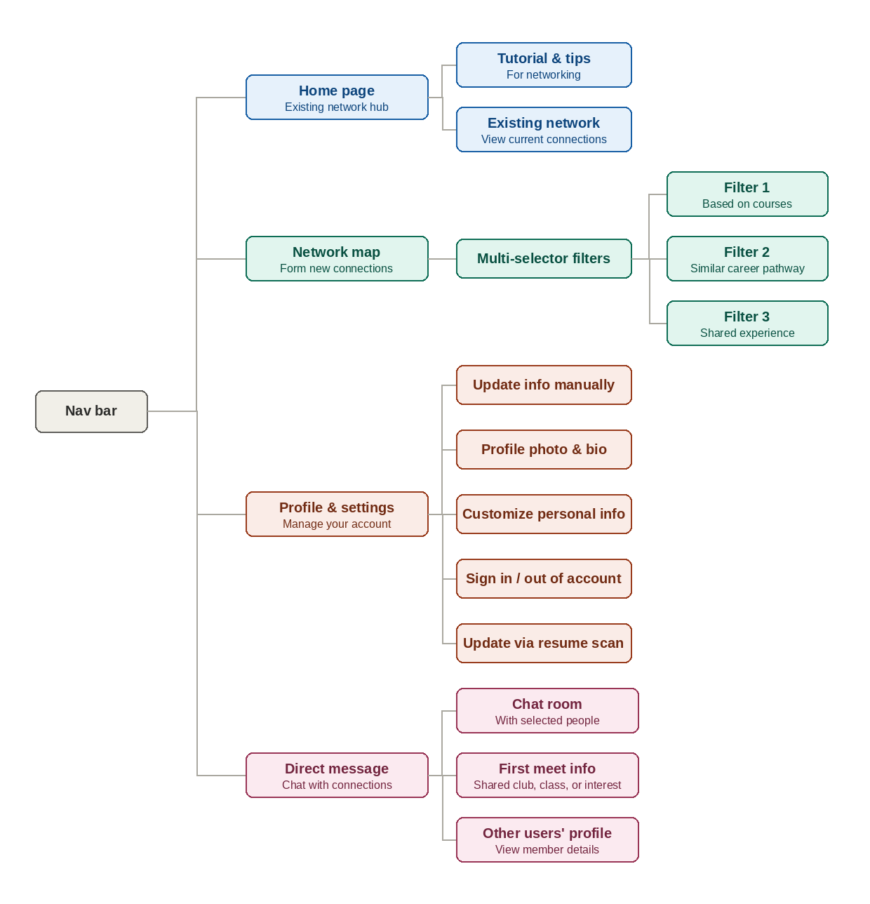
Wireframes
My low-fi wireframes centered on the network map, a draggable node diagram where users connect with classmates by interest, career aspiration, or shared experience, alongside a homepage listing current classes and a chat interface with suggested icebreakers. At this stage I focused on solving how to visualize growing connections spatially rather than as a flat list, and how filters and chat context could work together to help students move from a shared class to an actual conversation.
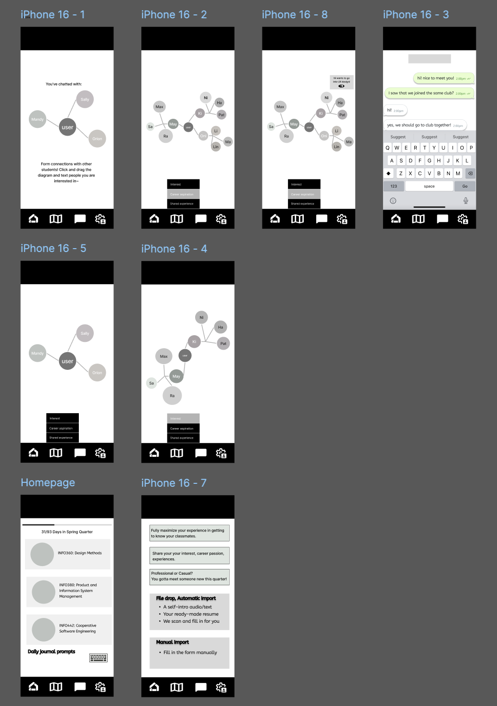
Prototype
High-Fidelity Screens
The high-fi screens replaced abstract node bubbles with real profile photos and named connections, making the network map feel personal rather than clinical. Filters became tappable category chips (career, course, interests, experience) with clear active states, and tapping a bubble now surfaces a preview card showing shared interests before messaging. The homepage evolved to highlight daily networking tips and updates from existing connections, while chat added contextual prompts referencing shared classes, helping bridge a filtered match into an actual conversation.
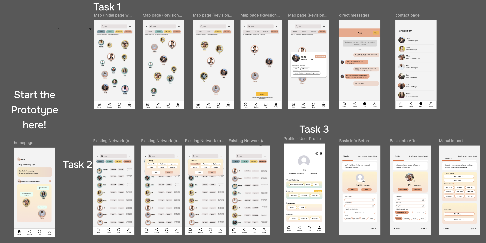
Style Guide
The style guide uses a warm coral accent against neutral grays and near-black, keeping the interface calm while drawing attention to key actions. Color-coded tags (career, course, interests, experience) stay muted and distinct, echoed in profile photo borders to reinforce filtering. Clean sans-serif type keeps hierarchy simple. Together these choices balance the target keywords: semi-professional and warm, credible enough for networking but approachable enough to feel like genuine college connection, not a corporate tool.
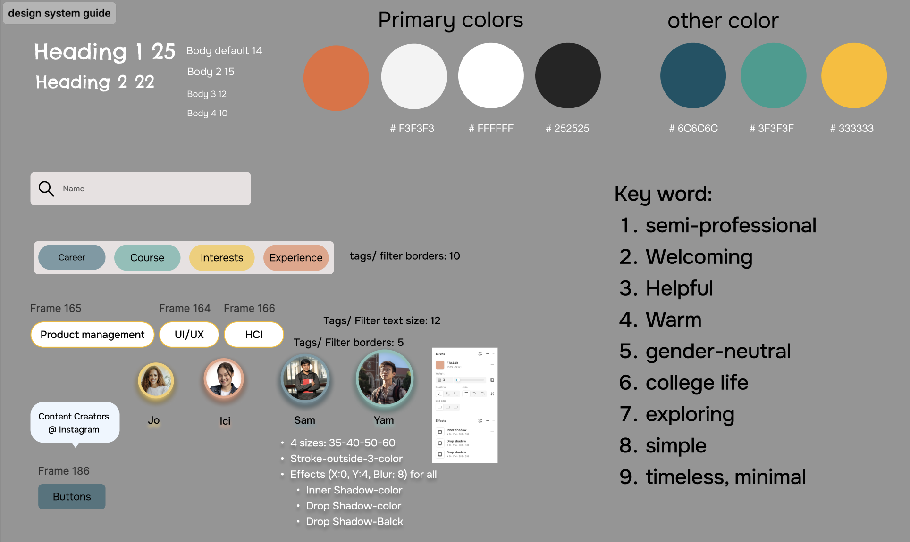
Test
Usability Testing
The goal of this test was to understand how users navigate the app, focusing on finding pages, searching for a profile, and editing their own information. Participants were asked to create an account, explore the connection map, and find a profile to connect with. Overall, they responded well to the design and liked the pop of color, though a few were confused by the filter categories at the top of the explore page, since nothing indicated the tags could be deselected.
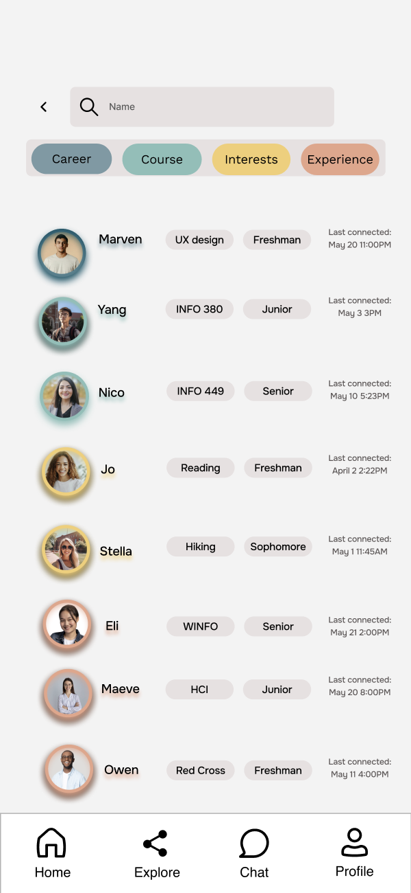
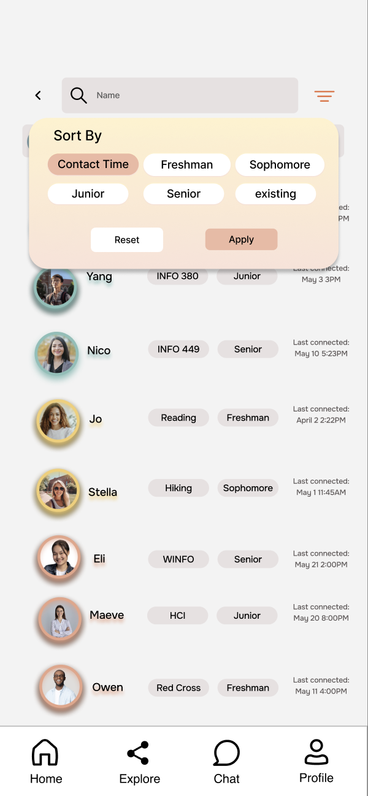
Based on this feedback, my team added a "Sort by" dropdown in the top right corner next to the search bar, using that explicit label so users would immediately understand they could sort and filter profiles. This gave the sorting function a clearer, more conventional entry point rather than relying on users to intuit that the category tags themselves were interactive.
Final Product
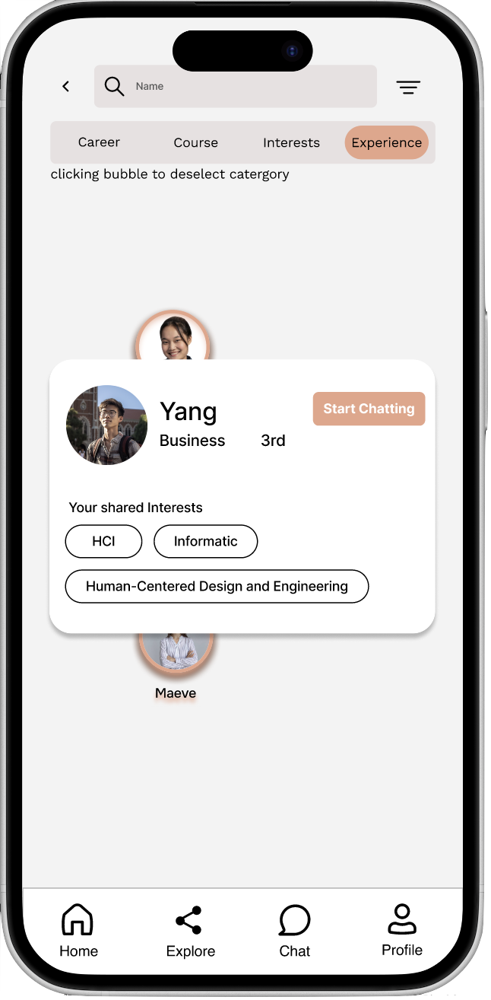
Conclusion
Key Takeaways
- Main insights. Research showed students struggle to connect beyond class time, and existing platforms feel either too impersonal or too narrow. This pointed to a need for discovering classmates through shared context, like courses or interests, and moving smoothly into conversation. Usability testing also showed that even good design can confuse users if interactive elements aren't visually obvious.
- What I've learned. This project reinforced letting feedback drive decisions rather than assumptions. Building Lauren's persona kept the design grounded, and iterative testing sharpened my eye for small interaction details that affect usability.